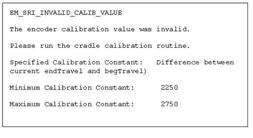

- 00000018WIA30F46E20GYZ
- id_131067833.0
- Aug 29, 2019 1:35:20 AM
Longitudinal Drive Calibration
Prerequisites
| Required persons | Preliminary requirements | Procedure | Finalization |
|---|---|---|---|
| 1 | Not Applicable | 15 minutes | Not Applicable |
| Item | Quantity | Effectivity | Part number | Manufacturer |
|---|---|---|---|---|
| Nonferrous Measurement Scale (must accurately measure up to 800 mm) | 1 | - | - | - |
| Item | Quantity | Effectivity | Part number | Manufacturer |
|---|---|---|---|---|
| Roll of Tape (to mark distances in the calibration procedure) | 1 | - | - | - |
| ||||
About this task
This calibration compensates for errors in table positioning. Errors can be caused by differing encoders and stacking tolerances in the drive system components. This calibration is normally required after initial start-up of software on a new system. The procedure is comprised of three sections:
-
Longitudinal Drive Calibration
-
Config file update
-
Calibration Check
An error is logged to indicate the need for this calibration. (See Figure 1.) This error is only a warning, and indicates that the table calibration files are not correct. Calibration may be necessary if the image does not align with the landmark. However, other factors could be causing this error, and calibration may not be the solution.

Longitudinal Drive Calibration
About this task
Longitudinal Drive Calibration must be performed before the Electrical Isocenter Calibration procedure.
Procedure
- Place a third piece of tape on the edge of the table aligned
with the first piece of tape on the cradle. (Two pieces of tape are
now on the table.) The two pieces of tape are spaced apart the same
distance that the cradle has moved. (See Figure 3.)
Figure 3. Reading Point A2 
Config File Update
Procedure
Check Calibration
Procedure
- Repeat Longitudinal Drive Calibration.
- DD should now equal DA within 1 mm. If it does not, continue Longitudinal Drive Calibration steps, update config file and recheck calibration.
Finalization
Finalization
No finalization steps.